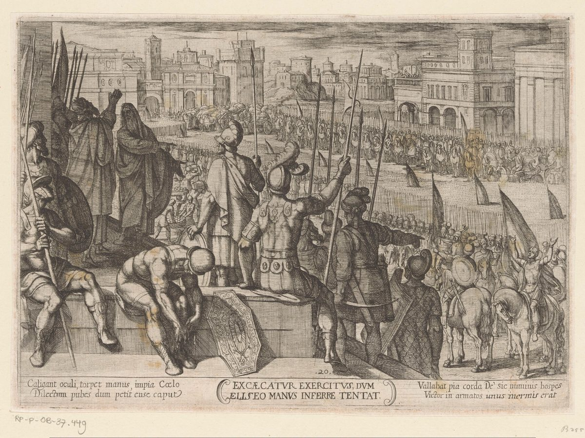

2 Kings 6 — The Mister Translation

2 Kings 6:18–23. The caption reads “Excaecatur exercitus, dum Eliseo manus inferre tentat”, which is Latin for “the army is blinded while it tries to lay hands on Elisha”. The Hebrew says that the troop came down to take him, that Elisha prayed for blindness and led them to Samaria, and that the king of Israel then asks whether to strike them (6:18–21); the print shows a whole army in the city.
_Oudtestamentische_strijdsc%C3%A8nes_(serietitel),_RP-P-OB-37.449.jpg){kind=link}
Translator's Notes — verse by verse
⭐ “The place where we dwell before you is too narrow”. The sons of the prophets ask Elisha for leave to build by the Jordan, and “before you”, lefanekha, is the word the last chapter kept returning to. The NWT 1984 has “before you”, the ASV “before thee”, the KJV and the Douay “with thee”, and the NIV “where we meet with you”. Rashi takes this chapter as the next in a list of Elisha’s miracles, and reports that the Rabbis read the crowding as coming after Gehazi: he had been pushing the students away, and when he was driven out many came (Sotah 47a). The verse does not say why the place is small, and the sons of the prophets were last named at 2 Kings 5:22 (now on these pages), where Gehazi puts them in his lie.
“Be willing, please”. One of them asks Elisha to come: ho’el na stands in two verses of the Hebrew Bible, this one and Judges 19:6 (now on these pages), where the girl’s father says it to the man he is hosting. Naaman said ho’el to Gehazi in 2 Kings 5:23, without the “please”. The KJV has “Be content”, the ASV “Be pleased”, the Geneva “Vouchsafe”, the NIV “Won’t you please come”, and the TLB “Please, sir, come with us”. Elisha says “I will go”, and the verse does not say why he agrees.
⚠ “The iron fell into the water… and it was borrowed”. The Hebrew says only “the iron”, ha-barzel. Rashi glosses it as the axe-head, and Radak says the small word et before it means “with”: the beam fell with the iron into the water. The ASV has “axe-head”, the KJV “axe head”, the NIV, the TLB and the NWT 1984 “axhead”, the Douay “the head of the axe”, and the Geneva “the iron”. The man cries “Alas, my lord!”, and the Douay has “Alas, alas, alas”. His reason is one word, sha’ul, “asked for”, and the Greek Bible in the Vaticanus tradition has “hidden” there. It is the root of the widow’s “ask for vessels” (2 Kings 4:3, now on these pages), and its letters are also the letters of the name Saul. In both chapters something asked for from another is made good.
⭐ “He cut off a stick and threw it in there”. The verse does not say how a stick makes iron float. Radak asks why Elisha cuts a new one and does not throw in the old handle, and answers that miracles are done with something new, as with the new bowl of salt (2 Kings 2:20, now on these pages); in his reading the stick fits the eye of the iron and the iron floats with its handle. Elisha has thrown salt into a spring (2:21) and flour into a pot (4:41), and Moses threw a tree into bitter water (Exodus 15:25), all now on these pages. The root of the verb for “float” is also the root of the verb in Deuteronomy 11:4 (now on these pages), where Jehovah “flooded the waters of the Sea of Reeds” over Egypt’s army. The ASV has “made the iron to swim”, the KJV “the iron did swim”, the Geneva “caused the iron to swim”, the NIV “made the iron float”, the NWT 1984 “made the axhead float”, and the TLB “floated”.
“Lift it up for yourself”. Elisha does not take it out. He says “Lift it up for yourself”, and the man “put out his hand and took it”, the verb laqach of the last chapter’s long argument about what may be taken, here with no price. The KJV and the ASV have “Take it up to thee”, the NIV “Lift it out”, and the TLB “Grab it”.
⚠ “At such and such a place”. The Hebrew is peloni almoni, a pair that stands in three verses of the Hebrew Bible, this one, Ruth 4:1, where Boaz calls to the kinsman he does not name, and 1 Samuel 21:3, where David uses it of a place (both now on these pages, the second spelled with a vav). Rashi glosses it as “concealed, secret”, and says the Targum has “covered and hidden”. The KJV, the ASV, the Geneva and the NIV have “such and such a place”, and the TLB leaves a blank, “____”. The Douay has “let us lay ambushes”, and its verse 9 has “the Syrians are there in ambush”; the Greek Bible in the Vaticanus tradition has “Syria is hidden” there. The Hebrew of verse 9 says the Arameans are “coming down”, and the form nechittim stands in one verse of the Hebrew Bible. The ASV and the NWT 1984 have “coming down”, the KJV “are come down”, and the NIV “going down”.
“Not once and not twice”. The king of Israel sends, is warned, and guards himself; “not once and not twice” stands in one verse of the Hebrew Bible, verse 10. The verse does not say which places, how many times, or what the king of Israel thought of the prophet; neither king is named in these verses, and the first king named in the chapter is Ben-hadad, at verse 24. Josephus names them: his Elisha warns Joram, and Adar is the Aramean king (Antiquities 9.51–52). The NWT 1984 has “not once or twice”.
⭐ “The heart of the king of Aram was storm-tossed”. The verb is in one verse in this form, vayisa’er lev; it is built on the word for a storm, and the English shelf spreads. The KJV and the ASV have “sore troubled”, the Geneva and the Douay “troubled”, the NIV and the NWT 1984 “enraged”, and the TLB “puzzled”. He asks “who of us is for the king of Israel?”, and he is sure it is a traitor; the servant answers “No”, and names the prophet. The ASV has “Nay”, the KJV and the NIV “None”, and the TLB “It’s not us”.
⭐ “The words that you speak in the chamber of your bed”. The Aramean servant knows Elisha’s name and what he is: “the prophet who is in Israel”, the words Elisha used to the king of Israel in 2 Kings 5:8 (now on these pages), “there is a prophet in Israel”. “The chamber of your bed” stands in two verses of the Hebrew Bible: this one, and Exodus 7:28 (now on these pages), where the frogs go “into your bedroom, and onto your bed”. The ASV and the KJV have “bedchamber”, the NIV and the TLB “bedroom”, the Geneva and the Douay “privy chamber”, and the NWT 1984 “inner bedroom”. The servant does not say how Elisha knows. Josephus has someone in the room say that it is Elisha who tells him everything (Antiquities 9.53).
“Look, he is in Dothan”. The king of Aram sends “horses and chariots and a heavy force” by night to take one man. Dothan is where Joseph found his brothers (Genesis 37:17, now on these pages). The KJV has “Go and spy where he is”, the ASV “Go and see”, the Geneva “Go, and espy”, and the NIV “Go, find out”.
⚠ “The attendant of the man of God”, and then “his young man”. The man who rises early is mesharet ish ha-Elohim, “the attendant of the man of God”, a phrase that stands in one verse of the Hebrew Bible; the same verse then calls him “his young man”. Elisha himself “ministered to” Elijah in the same root (1 Kings 19:21, now on these pages). This attendant is not named; Gehazi, the servant named in the last chapter, went out from Elisha at 2 Kings 5:27 (now on these pages). The ASV, the KJV and the NIV have “servant”, the NWT 1984 “minister” and then “attendant”, and the TLB “the prophet’s servant”. His cry is ahah adoni, “Alas, my lord!”, the same cry as the man with the borrowed iron in verse 5. In Joshua 7:7 and Judges 6:22 (both now on these pages) the word is said to Jehovah. The ASV and the KJV have “Alas, my master”, the Geneva “Alas master”, and the NIV “Oh no, my lord!”. Josephus has the attendant run to Elisha “with shouting and confusion” (Antiquities 9.54).
⭐ “Do not be afraid, for those who are with us are more than those who are with them”. Elisha gives no explanation; he prays. The ASV has “they that are with us are more than they that are with them”, the NIV “Those who are with us are more than those who are with them”, the Douay “there are more with us than with them”, and the TLB “our army is bigger than theirs”.
⭐ “Jehovah, open his eyes, please, that he may see”. “Open his eyes, please” stands in one verse, and “and he opened”, vayifqach, in four: Genesis 21:19, where God opens Hagar’s eyes on a well, 2 Kings 4:35, where the boy opens his, and this verse and verse 20 here. The mountain is “full of horses and chariots of fire all around Elisha”: the fire of 2 Kings 2:11 (now on these pages), where a chariot of fire and horses of fire parted Elijah and Elisha, and Elisha’s own cry at 2:12, “the chariot of Israel and its horsemen”. The ASV and the KJV have “the mountain was full of horses and chariots of fire”, the NIV “the hills”, the NWT 1984 “the mountainous region”, and the TLB “horses of fire and chariots of fire everywhere”. Josephus has a multitude of chariots and horses around Elisha, and no fire (Antiquities 9.55).
⚠ “Strike this nation, please, with blindness”. The Hebrew word is sanverim, and it stands in two verses of the Hebrew Bible: this one, and Genesis 19:11 (now on these pages), where the men at Lot’s door were “struck with blindness” and could not find it. Here the men who came down cannot find the city. Rashi notes that in the curse Elisha did not say the Name, and that in each opening of eyes, the attendant’s and the troop’s, he did. The ASV and the KJV have “Smite this people… with blindness”, the NIV “Strike this army with blindness”, the NWT 1984 “strike this nation with blindness”, and the TLB “please make them blind”. Josephus has no blindness: his Elisha asks God to dim their eyes with a mist (Antiquities 9.56).
⭐ “This is not the way, and this is not the city”. Elisha tells the blinded troop to follow him, “and I will bring you to the man you are seeking”, and “he led them to Samaria”. Rashi says he told them the truth, because he had already left the city. The ASV and the KJV have “This is not the way, neither is this the city”, the NIV “This is not the road and this is not the city”, and the TLB “You’ve come the wrong way!”. The verse does not say whether he deceived them; the man they sought was walking in front of them.
⭐ “Open the eyes of these men, that they may see”. In Samaria he prays the opposite prayer, with the vayifqach of verse 17: “And Jehovah opened their eyes, and they saw — and look, they were in the midst of Samaria.” The KJV has “they were in the midst of Samaria”, the NIV “there they were, inside Samaria”, the Douay “they saw themselves to be in the midst of Samaria”, and the TLB adds “the capital city of Israel”, which the Hebrew does not say.
⭐ “Shall I strike, shall I strike, my father?” The king of Israel asks twice, and calls Elisha “my father”, as the servants called Naaman “my father” (2 Kings 5:13, now on these pages) and Elisha called Elijah (2 Kings 2:12, now on these pages). Elisha’s answer is a question: “Those whom you have taken captive with your sword and your bow — do you strike them?” The KJV and the ASV have “wouldest thou smite those whom thou hast taken captive”, the NIV “Would you kill those you have captured with your own sword or bow?”, the Douay “for thou didst not take them with thy sword, or thy bow”, and the TLB “Do we kill prisoners of war?”. Josephus has Elisha say that the law of war allows killing those taken in war, and that these men had done no harm and had come by a divine power (Antiquities 9.58). Elisha says “Set bread and water before them”, with lifnehem, “before them”, the word that ran through 2 Kings 5.
“A great feast”, and “the bands of Aram”. “A great feast”, kerah gedolah, stands in one verse of the Hebrew Bible. The NIV, the NWT 1984 and the TLB have “a great feast”, the KJV and the ASV “great provision”, the Geneva “great preparation”, and the Douay “a great provision of meats”. “The bands of Aram”, gedude Aram, are the raiding bands that took the little girl in 2 Kings 5:2 (now on these pages), and they “did not come again into the land of Israel”. The next verse has the whole camp of Aram go up against Samaria.
“Gathered all his camp”. The bands stop, and the army comes. Ben-hadad “gathered all his camp”, machanehu, the word of Naaman’s “all his camp” at 2 Kings 5:15 (now on these pages), “and went up and besieged Samaria”. He is the first king named in the chapter. The verse does not say whether this is the king of verse 8, and Josephus, who calls the Aramean king Adar, has him come openly because he is afraid of Elisha (Antiquities 9.60–61).
⚠ “A donkey’s head… and dove’s dung”. “A donkey’s head” is “eighty of silver” in the Hebrew, and the Hebrew gives no noun for the silver; the ASV and the KJV have “fourscore pieces of silver”, the NIV “eighty shekels”, and the NWT 1984 “eighty silver pieces”. The Greek Bible in the Vaticanus tradition has “fifty”. Radak says “donkey’s head” means just that, since unclean animals were eaten from hunger, and he notes that the Targum says the same. The second price is “a fourth of a kab of dove’s dung”, and the Hebrew line prints it in two forms, as written and as read, ketiv and qere: chari yonim and divyonim. Rashi glosses the read form as “dung that flows from the doves”, and a note on his gloss reports that without wood it was used as fuel. The KJV, the ASV, the Geneva and the NWT 1984 have “dove’s dung”, the Douay “pigeon’s dung”, the TLB “a pint of dove’s dung”, and the NIV “seed pods”. Josephus has the measure bought “in place of salt” (Antiquities 9.62).
⭐ “Save, my lord the king!” The woman’s cry is hoshi’ah, “save”, and the king answers with the same verb twice: “If Jehovah does not save you, from where shall I save you? From the threshing floor or from the winepress?” “From where?”, me’ayin, is what Elisha asked Gehazi (2 Kings 5:25, now on these pages). A woman also cries “Save, O king!” to a king at 2 Samuel 14:4 (now on these pages). The KJV and the ASV have “Help, my lord, O king” and “whence shall I help thee”, the NIV “Help me” and “where can I get help for you”, the Douay “Save me” and “how can I save thee”, and the Geneva “succor”. The king’s answer is about grain and wine. Josephus has him think she wants food and curse her (Antiquities 9.64).
⚠ “Give your son, and we will eat him today”. The king asks “What is the matter with you?”, and she tells it. The other woman proposed that they eat the speaker’s son today and her own tomorrow; they boiled the speaker’s son and ate him, and on the next day the other woman hid hers. The verse reports her words and says nothing of its own. Moses had said what a siege would do: “you will eat the fruit of your belly, the flesh of your sons and your daughters” (Deuteronomy 28:53, now on these pages), and “you shall eat the flesh of your sons” (Leviticus 26:29, now on these pages). The KJV and the ASV have “we boiled my son, and did eat him”, the NIV “we cooked my son and ate him”, and the Geneva “we sod my son”. Josephus has the mother say that she killed hers first, and that both of them ate him (Antiquities 9.66).
⭐ “The sackcloth was on his flesh, underneath”. The king tears his clothes, and “the people looked”: Rashi says they saw the sackcloth through the tear. “Sackcloth on his flesh” stands in two verses of the Hebrew Bible: this one, and 1 Kings 21:27 (now on these pages), where Ahab puts it on after Naboth. The KJV and the ASV have “sackcloth within upon his flesh”, the NIV “under his robes, he had sackcloth on his body”, the NWT 1984 “sackcloth was underneath upon his flesh”, and the Douay “the haircloth which he wore within next to his flesh”. The verse does not say how long he had worn it.
⭐ “So may God do to me, and so may he add”. The oath koh ya’aseh li Elohim stands in four verses of the Hebrew Bible: 2 Samuel 3:35 and 19:14, 1 Kings 2:23, and this one (all now on these pages). Here the king swears that Elisha’s head, “Elisha son of Shaphat”, will not stay on him today. The KJV has “God do so and more also to me”, the Geneva “God do so to me and more also”, the NIV “May God deal with me, be it ever so severely”, the NWT 1984 “So may God do to me, and so may he add to it”, and the TLB “May God kill me if I don’t execute Elisha this very day”. In verse 27 the king named Jehovah; here, God.
⚠ “This son of a murderer”. “Son of a murderer” stands in one verse of the Hebrew Bible. The verse does not say which murderer; a reader may think of Ahab and Naboth (1 Kings 21:19, now on these pages: “Have you murdered, and also taken possession?”), and Josephus, who calls the king Joram, has Elisha say “Joram the son of the murderer” (Antiquities 9.68). The KJV, the ASV, the Douay and the NWT 1984 have “son of a murderer”, the Geneva “murderer’s son”, and the NIV and the TLB “this murderer”. Rashi says it was revealed to him by the divine spirit that the king was coming behind the messenger, and Radak says it was the king who sent the man. He tells the elders: “shut the door, and press him back with the door”. He has shut a door before, at 2 Kings 4:33 (now on these pages), to pray. The KJV has “hold him fast at the door”, the ASV “hold the door fast against him”, the NIV “hold it shut against him”, the Geneva “handle him roughly at the door”, and the Douay “suffer him not to come in”.
⚠ “And he said”. The chapter ends: “While he was still speaking with them, look, the messenger was coming down to him; and he said: ‘Look, this evil is from Jehovah; why should I wait for Jehovah any longer?’” The Hebrew says only “and he said”, and does not name the speaker. Rashi says “the king”, and Radak says the king who came after the messenger. The NIV has “The king said”, the NWT 1984 has “[the king]” in brackets, and the TLB has “the king stormed”; the KJV, the ASV, the Geneva and the Douay have “he said”. The Greek Bible in the Vaticanus tradition has the messenger coming down and “he said”, with the same gap. The NIV has “disaster”, the NWT 1984 “calamity”, the Douay “so great an evil”, and the TLB “mess”. This page leaves the speaker unnamed, as the Hebrew does. The next chapter opens with Elisha’s answer, “Hear the word of Jehovah” (2 Kings 7:1, now on these pages).
Patterns worth carrying forward
Where this translation keeps the words exact and distinct: “before you”, as at 2 Kings 5; “Be willing, please”; “the iron” and “borrowed”, one word each, sha’ul for the second; “made the iron float”; “Lift it up for yourself”; “such and such a place”; “storm-tossed”; “the chamber of your bed”; “the attendant of the man of God” and “his young man”, as at 4:43; “Alas, my lord”; “Open his eyes, please”; “chariots of fire”, as at 2:11; “blindness” for sanverim, as at Genesis 19:11; “my father”, as at 2:12 and 5:13; “a great feast”; “the bands of Aram”, as at 5:2; “all his camp”, as at 5:15; “dove’s dung”; “Save” and “from where”; “boiled”; “sackcloth”, as at 1 Kings 21:27; “So may God do to me”; and “son of a murderer”. The written and read Hebrew are recorded at verse 25.
Echoes paid. Gehazi’s going out from Elisha (2 Kings 5:27); the borrowed vessels (2 Kings 4:3); the new bowl and the salt (2 Kings 2:20–21), the flour (2 Kings 4:41) and the tree thrown into the water (Exodus 15:25); the waters flooding over Egypt’s army (Deuteronomy 11:4); “Be willing” (Judges 19:6; 2 Kings 5:23); the unnamed man of Ruth 4:1; the prophet in Israel (2 Kings 5:8); the bedroom of the frogs (Exodus 7:28); Dothan (Genesis 37:17); Elisha’s service to Elijah (1 Kings 19:21); “Alas” to Jehovah (Joshua 7:7; Judges 6:22); the eyes opened on a well (Genesis 21:19) and on a boy (2 Kings 4:35); the chariot of fire (2 Kings 2:11–12); the men struck with blindness (Genesis 19:11); “where from?” (2 Kings 5:25); the bands that took the girl (2 Kings 5:2); the woman who cries “Save” to a king (2 Samuel 14:4); the siege curses (Deuteronomy 28:53; Leviticus 26:29); Ahab’s sackcloth and Naboth (1 Kings 21:19, 27); the oath of 2 Samuel 3:35, 19:14 and 1 Kings 2:23; and the door shut at 2 Kings 4:33.
Echoes planted. Elisha’s answer, “Hear the word of Jehovah”, and the price of flour in the gate of Samaria (2 Kings 7:1, now on these pages); the officer on whose hand the king leans (2 Kings 7:2, 17, now on these pages); and the women who eat their sons, which Lamentations 4:10 names. The rest are yet to come in this translation.
Next in this book: 2 Kings 7 — Elisha says that by tomorrow a measure of fine flour will cost a shekel in the gate of Samaria, an officer doubts it, and four men with the scaly disease at the gate go into the camp of Aram.